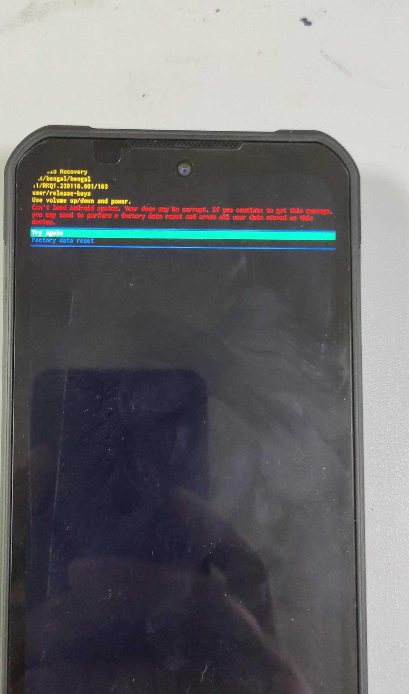
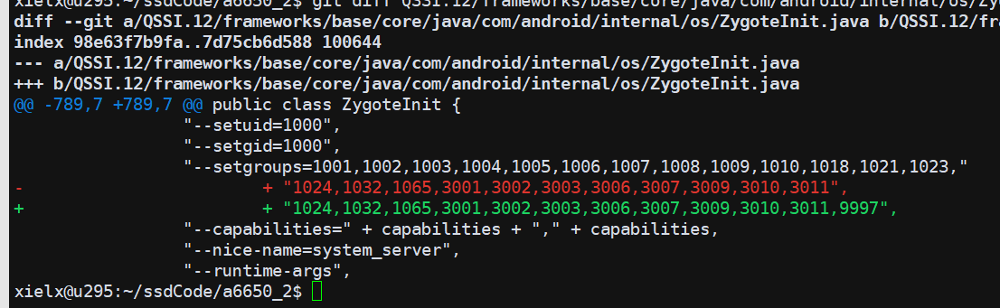
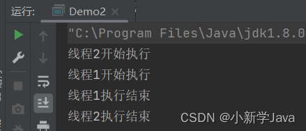

长时间录制视频¶
楼下2台机器,测试录制视频,两台都显示进入recovery
分析¶
由于是user版本,并且recovery模式下,没有打开adb,所以先dump misc分区出来,看看能不能看到什么原因
dump misc¶
按 try again,让机器重启,然后同时按住音量上下键,机器进入9008 模式

dump misc分区出来 啥都没有

直接fastboot erase misc¶
可能是工具读取misc分区有问题,采用直接erase misc分区的方法,让系统起来
fastboot erase misc
fastboot reboot
adb wait-for-device && adb logcat > 0529.1.txt
如果没有adb权限的话,要下载一个带debug态的sp
adb pull /data/system/dropbox
如果上面这一步就可以看到明显信息的话,dropbox就可以不需要了
这一题捉出来的log 0529.1.txt¶
直接原因可以看到,RescueParty 升级到 FACTORY_RESET

在搜索 exception,可以看到system server因为 没有空间挂了

解决方法¶
sdcard 文件系统 预留100M 禁止写满
QSSI.12/system/core/sdcard/sdcard.cpp
static bool sdcardfs_setup(const std::string& source_path, const std::string& dest_path,
uid_t fsuid, gid_t fsgid, bool multi_user, userid_t userid, gid_t gid,
mode_t mask, bool derive_gid, bool default_normal, bool unshared_obb,
bool use_esdfs) {
// Add new options at the end of the vector.
std::vector<std::string> new_opts_list;
if (multi_user) new_opts_list.push_back("multiuser,");
if (derive_gid) new_opts_list.push_back("derive_gid,");
if (default_normal) new_opts_list.push_back("default_normal,");
if (unshared_obb) new_opts_list.push_back("unshared_obb,");
// Try several attempts, each time with one less option, to gracefully
// handle older kernels that aren't updated yet.
for (int i = 0; i <= new_opts_list.size(); ++i) {
std::string new_opts;
for (int j = 0; j < new_opts_list.size() - i; ++j) {
new_opts += new_opts_list[j];
}
auto opts = android::base::StringPrintf("fsuid=%d,fsgid=%d,%smask=%d,userid=%d,gid=%d",
fsuid, fsgid, new_opts.c_str(), mask, userid, gid);
if (mount(source_path.c_str(), dest_path.c_str(), use_esdfs ? "esdfs" : "sdcardfs",
MS_NOSUID | MS_NODEV | MS_NOEXEC | MS_NOATIME, opts.c_str()) == -1) {
PLOG(WARNING) << "Failed to mount sdcardfs with options " << opts;
} else {
return true;
}
}
return false;
}